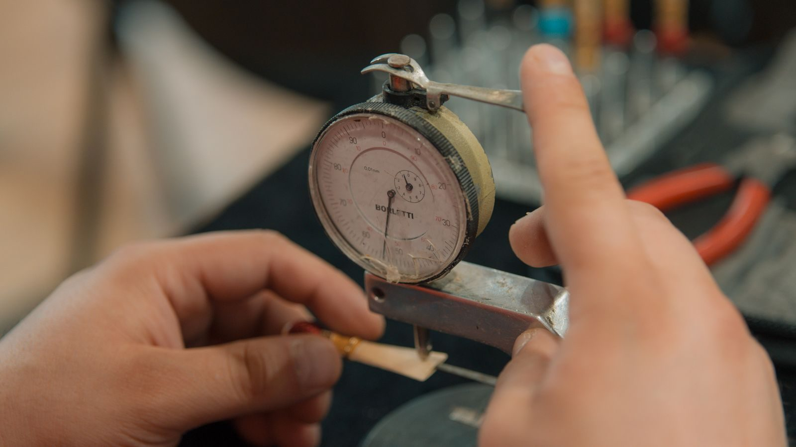

Ra is an average, not a maximum
Ra is the arithmetic mean deviation of the surface profile from its mean line. Because it is an average, a surface with the same Ra can look very different depending on whether its roughness comes from many fine marks or a few deep ones.
That is why Ra alone does not fully describe a sealing or bearing surface. Two surfaces measured at the same Ra can perform differently if the profile shapes differ, which is why specifications for critical surfaces often add Rz or Rmax.

What each process actually delivers
As-machined surfaces from a normal milling or turning operation typically sit in the Ra 3.2 to 1.6 range. Finer passes with reduced feed can reach Ra 0.8, and specialised operations go lower, but each step down adds machine time.
The important consequence is that the finish specification is a cost decision. Going from Ra 3.2 to Ra 0.8 roughly means slower feeds and additional passes over the same surface, so it should be applied only to the surfaces that need it.
Where Ra matters and where it does not
Ra matters on sealing faces, bearing surfaces, sliding contacts and any surface that will be painted or bonded, because those functions depend on the surface. It does not matter on a clearance hole, a non-contact internal face or a hidden surface.
Specifying a fine finish across a whole part is one of the most common ways to pay for something the part never uses. Calling out finish only on the functional surfaces is a straightforward saving.
How it is measured and what to ask for
Ra is measured with a stylus profilometer or optically, and the measurement direction matters: a turned surface reads differently along and across the lay. Comparing two measurements without stating direction can produce a disagreement that has nothing to do with the part.
For critical surfaces the drawing should state the value, the direction and the process. For everything else, a note that the surface is to be as-machined is enough, and it is honest about what the part needs.
How Ra is actually calculated
Ra is computed over a sampling length: the profile is measured from its mean line, the area between the profile and that line is divided by the length, and the result is the arithmetic mean deviation. It is an average, which is why a surface with many shallow marks and one with a few deep marks can report the same number while behaving quite differently.
The sampling length is not a detail. A very short cut-off filters out long-wavelength waviness and reports a flattering number; a longer one includes the waviness that the part may actually care about. Two measurements of the same surface can disagree simply because the cut-off differs, which is why a finish callout without a cut-off is an incomplete specification.
The process-to-Ra ladder with realistic values
Horizontal bands are more useful than single values. Rough sawing and flame cutting sit in the tens of micrometres. Normal milling and turning with a sensible feed land around Ra 3.2 down to 1.6. A finishing pass with a reduced feed and a fresh edge can reach about Ra 0.8. Below roughly Ra 0.4, you are generally into grinding; below Ra 0.1, into honing or lapping.
Each step down the ladder costs machine time, because it is achieved by reducing feed, taking lighter passes or adding an operation. The ladder is therefore a price list as much as a specification, and the right question is not 'how smooth can you make it' but 'which of these bands does this surface actually need'.
Rz and Rmax: the numbers that catch what Ra hides
Rz is the average of the peak-to-valley heights over the sampling length, and Rmax is the single largest peak-to-valley value found. Both describe the extremes. A surface can report an acceptable Ra while containing one deep scratch, because the average absorbs the outlier; Rz and Rmax do not.
That is why sealing faces, fatigue-critical surfaces and surfaces that will be coated often carry a peak-height requirement alongside Ra. The specification is doing two jobs: controlling the typical texture through Ra, and capping the worst defect through Rz or Rmax. Where only one is given, the other is uncontrolled.
Lay direction and measurement direction
Machining leaves a lay - the direction of the predominant surface pattern. A turned surface has circumferential marks, a milled face has marks along the cutter path, and a ground surface has its own. Measuring across the lay and measuring along it give different numbers, because the stylus crosses a different feature set.
This is a frequent source of a supplier and a customer disagreeing about the same part. The drawing should state the direction of measurement where it matters, and both parties should measure in the same direction against the same cut-off. Specifying the process alongside the value usually settles the direction implicitly.
Where finish genuinely matters
Four functions depend on surface texture: sealing, where a controlled texture helps a gasket or an O-ring seat; bearing and sliding contact, where the texture interacts with lubrication; bonding and painting, where a specified profile gives the adhesive or coating something to key into; and appearance, where the requirement is cosmetic and visual rather than functional.
Notice that these are all surface functions. A clearance hole, a hidden internal face, a non-contact boss and anything inside an assembly that will never be seen are not in the list. Applying a fine finish there buys nothing and costs real machine time on every part.
The cost of a finish specification
A finish callout has two costs: producing the surface and proving it. Producing it means slower feeds, extra passes or an additional operation. Proving it means a profilometer measurement, which takes a fixture, a direction and time that a caliper check does not.
Where a part has one critical sealing face among fifty features, the right pattern is a single callout on that face and a general note that the remainder is as-machined. That keeps both costs proportional to the function, and it removes the incentive for a shop to over-finish everything in order to be safe.
Common finish specification errors
The recurring errors are: specifying a numeric Ra across a whole part where only one face matters; omitting the cut-off and measurement direction on a critical face; specifying a finish that the chosen process cannot reach without an unmentioned operation; and contradicting the general note elsewhere on the drawing. Each of these creates either unnecessary cost or a dispute.
The last is worth a specific mention. Where a title-block note says surfaces are to be as-machined and a detail states Ra 0.4 on a face, the drawing is internally inconsistent unless the process that achieves the tighter value is also stated. Making the intent explicit is cheaper than arbitrating it later.
Writing a finish callout that survives
A specification that removes ambiguity states the value, the parameter, the cut-off, the measurement direction and, where relevant, the process. For non-critical surfaces, an explicit as-machined note is a complete and honest specification, and it protects the supplier from having to guess which faces a customer might later judge aesthetically.
The test of a good callout is whether two inspectors, given the drawing and the part, would report the same result. If the answer depends on which direction they measured or which cut-off they chose, the callout is incomplete - and the fix belongs on the drawing, not in a conversation after delivery.
Ra is an average, which is why two different surfaces can share a number
Ra is the arithmetic mean of the profile deviation from the mean line over the assessed length. It says nothing about the shape of the profile, so a surface with fine, evenly spaced scratches and one with occasional deep gouges can report the same Ra while behaving completely differently in service. Rz, the maximum height of the profile, and Rmax are the values that capture the extremes.
The measuring cut-off matters as much as the number. A roughness value is only meaningful together with the sampling length and cut-off used to obtain it, and comparing an Ra measured with a 0.8 mm cut-off against one measured with a 2.5 mm cut-off is not a comparison at all. Where a working surface is critical, quoting the parameter, the value and the cut-off together is the only way to make the requirement unambiguous.
Specify roughness where it does work, and nowhere else
A blanket note demanding 0.8 micron Ra across a whole component buys very little and is paid for twice - once in extra finishing operations and again in inspection time. Functional faces earn their specification: a sealing face, a sliding surface, a bearing journal or an O-ring groove. Everything else can sit under a general note, commonly 3.2 micron Ra for a machined surface, and be left alone.
The other half of the specification is what should not be there. Burrs, a raised edge from a milling pass, or a sharp corner on a handled part are all outside the scope of an Ra value and are usually better called out directly. A drawing that names the roughness of the working surfaces and separately states the deburring requirement is far more useful to a shop than a single tight Ra note applied indiscriminately.
Frequently asked
What is a realistic Ra from normal CNC machining?
As-machined finishes typically land around Ra 3.2 to 1.6 for milling and turning, with Ra 0.8 achievable by slowing the feed and using a finishing pass. Values below that usually require a specialised operation such as grinding, honing or lapping.
Is a lower Ra always better?
No. Finer finishes cost more and, on some sealing surfaces, are not even beneficial - an extremely smooth surface can fail to retain lubricant. The correct value is the one the function requires.
What is the difference between Ra, Rz and Rmax?
Ra is the average deviation, Rz is the average of the peak-to-valley heights over the sampling length, and Rmax is the single largest peak-to-valley value. Rz and Rmax describe the extremes that Ra can hide, which is why they are used on critical surfaces.